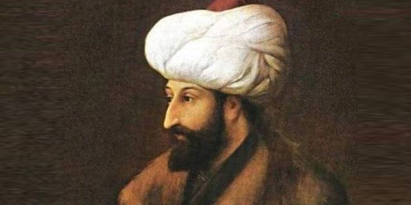
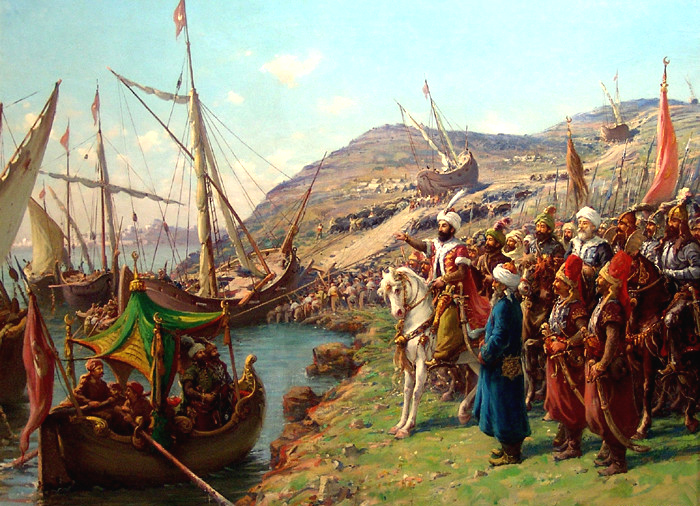

Biografi

Mehmed II, juga dikenal secara luas sebagai Muhammad al-Fatih atau
Mehmed Sang Penakluk adalah penguasa Utsmani ketujuh yang berkuasa
pada 1444 – 1446 dan 1451 – 1481. Mehmed II mengukir berbagai
capaian pada masa pemerintahannya, tetapi yang paling dikenal adalah
Penaklukan Konstantinopel pada 1453, menjadikannya mendapat julukan
'Sang Penakluk'. Mehmed dikenal sebagai pemimpin yang cakap dan
mempunyai kepakaran dalam bidang kemiliteran, ilmu pengetahuan,
matematika, dan menguasai delapan bahasa saat berumur 21 tahun. Dia
dikenal sebagai pahlawan di Turki maupun dunia Islam secara luas.
Dalam sejarah Islam, Mehmed dikenal sebagai salah seorang pemimpin
yang hebat sebagaimana Sultan Shalahuddin Al-Ayyubi (pahlawan Islam
dalam perang Salib) dan Sultan Saifuddin Mahmud Al-Qutuz (pahlawan
Islam dalam peperangan di 'Ain Al-Jalut melawan tentara Mongol). Di
pemerintahan, Mehmed lebih memilih para pejabat tinggi dari latar
belakang devşirme daripada mereka yang berasal dari keluarga
bangsawan, menjadikan kendali negara benar-benar terpusat pada
sultan.
Penaklukan Konstatinopel

Proses penaklukan Konstantinopel oleh Sultan Mehmed II dimulai pada
6 April 1453, ketika pasukan Utsmani yang berjumlah sekitar 150.000
tentara mengepung kota yang merupakan ibu kota Kekaisaran Bizantium
tersebut. Mehmed II mempersiapkan strategi yang cermat, termasuk
penggunaan meriam besar, seperti meriam Basilika, yang dirancang
untuk menghancurkan tembok pertahanan kota yang terkenal kuat.
Selama pengepungan, pasukan Utsmani melakukan serangan berkala untuk
melemahkan pertahanan Bizantium, sementara Kaisar Konstantinus XI
berusaha mempertahankan kota dengan jumlah pasukan yang jauh lebih
kecil, sekitar 7.000 hingga 10.000 tentara. Meskipun pertahanan
Bizantium gigih, mereka mengalami kekurangan pasokan dan kelelahan
akibat serangan yang terus-menerus.
Pada 29 Mei 1453, pasukan Utsmani melancarkan serangan akhir yang
menentukan. Setelah serangan besar-besaran dari berbagai sisi,
mereka berhasil menembus pertahanan dan memasuki kota. Pertempuran
sengit terjadi di dalam Konstantinopel, tetapi pasukan Utsmani, yang
dipimpin oleh Mehmed II, akhirnya menguasai kota tersebut. Kaisar
Konstantinus XI tewas dalam pertempuran, dan dengan jatuhnya
Konstantinopel, Mehmed II mengumumkan kota ini sebagai ibu kota baru
Kekaisaran Utsmani. Penaklukan ini tidak hanya mengakhiri Kekaisaran
Bizantium, tetapi juga menandai perubahan besar dalam peta politik
dan budaya dunia.
Fakta Menarik
beberapa fakta menarik tentang Sultan Mehmed II, yang juga dikenal
sebagai Muhammad Al-Fatih.
Usia Muda sebagai Sultan
Mehmed II menjadi Sultan Utsmani pada usia yang sangat muda, yaitu
12 tahun, setelah kematian ayahnya, Sultan Murad II. Meskipun
usianya masih belia, ia menunjukkan kemampuan kepemimpinan yang
luar biasa dan mengambil alih kekuasaan secara penuh pada usia 19
tahun.
Strategi Militer yang Inovatif
Mehmed II dikenal karena penggunaan teknologi militer yang canggih
untuk zamannya. Ia mengembangkan dan menggunakan meriam besar yang
mampu menghancurkan tembok pertahanan Konstantinopel, serta
menerapkan taktik pengepungan yang efektif.
Julukan "Al-Fatih"
Gelar "Al-Fatih," yang berarti "Sang Penakluk," diberikan kepada
Mehmed II sebagai penghormatan atas keberhasilannya dalam
menaklukkan Konstantinopel. Gelar ini mencerminkan prestasi luar
biasanya dalam sejarah militer dan politik.